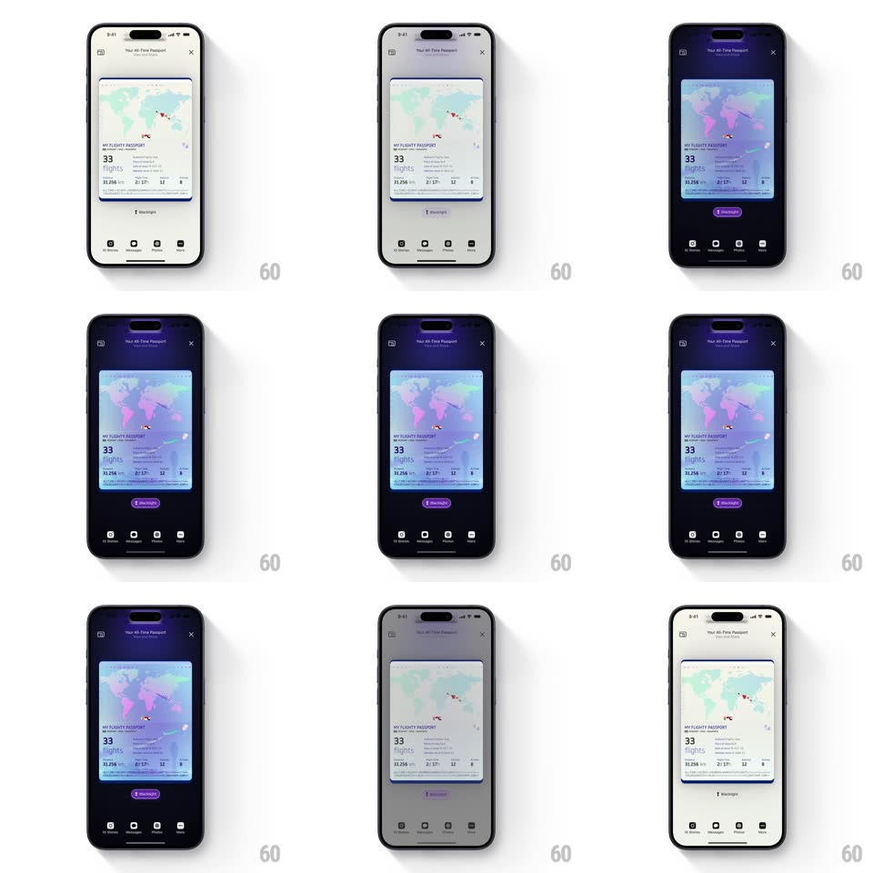

Media
Frame-by-frame

Rebuild this interaction 1:1: Flighty's share-passport blacklight - tapping the Blacklight option on the "Your All-Time Passport" share card sweeps a UV-style transformation across the screen: the background drops to deep purple-black and the passport card's map and stats fluoresce in neon purple, pink, and blue, like a passport under airport security light.

Rebuild this interaction 1:1: Flighty's share-passport blacklight - tapping the Blacklight option on the "Your All-Time Passport" share card sweeps a UV-style transformation across the screen: the background drops to deep purple-black and the passport card's map and stats fluoresce in neon purple, pink, and blue, like a passport under airport security light. ## Integration Integration: stack-agnostic spec - springs given as stiffness/damping, timed motions as duration + curve; map every value to your framework and animation library of choice. ## Scene Share preview screen: "Your All-Time Passport" header, the passport card (world map, "33 flights", distance/duration stats, stamps), a Blacklight toggle button, and style thumbnails along the bottom. ## Motion spec Pattern: glowing blacklight theme sweep. - Tap Blacklight: a dark wave sweeps over the screen from top to bottom (~450ms, ease-in-out) - the background fades to deep purple-black first, the card following a beat later. - On the card, the map's continents ignite in neon pink/purple and flight paths glow blue (opacity + saturation ramp, 400ms, starting as the wave passes), as if UV-reactive ink is lighting up. - The stats and labels shift to glowing light-on-dark values (200ms crossfade); hidden UV details (extra stamps, route arcs) fade in that were invisible in the light theme. - The Blacklight button fills purple (150ms) to show the active state. - Tapping again (or another style) reverses the sweep: colors drain bottom-to-top back to the light passport (450ms). ## Calibration - The sweep direction matters: darken top-down, restore bottom-up. - The card's glow colors are fluorescent - high saturation against the dark ground, edges slightly soft like real UV ink. ## Reduced motion Theme crossfades (300ms) without the directional sweep. ## Don't miss - The light-theme card must look like a real passport first - the blacklight reveal only works against that baseline. - The bottom style thumbnails stay legible in both themes - they dim but never vanish.